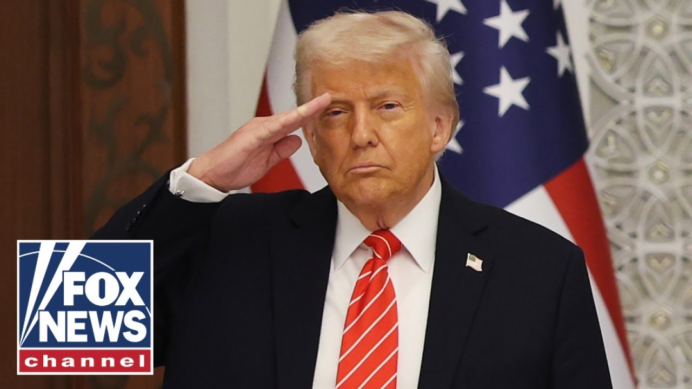

【突发新闻：特朗普证实美国向伊朗提出核协议提案】
Summary: President Trump reveals a U.S. proposal for a nuclear deal with Iran during his Middle East trip, which also secured billions in investments and strengthened diplomatic ties.
摘要： 特朗普总统在中东之行期间透露美国向伊朗提出核协议提案，此行还确保了数十亿美元的投资并加强了外交关系。

⏱️ Estimated Reading Time: 13 min
To a Fox News alert.
福克斯新闻快讯。
Right now, President Donald Trump is heading back to the United States after wrapping up his historic trip to the Middle East.
此刻，唐纳德·特朗普总统在结束具有历史意义的中东之行后正返回美国。
And the commander-in-chief breaking some news while flying home on board Air Force One, revealing the US has given Iran a proposal for a nuclear deal.
这位三军统帅在乘坐空军一号回国途中透露了一些消息，称美国已向伊朗提出一项核协议提案。
Okay, here we go.
好的，我们开始吧。
Lucas Thomas joins us from Abu Dhabi with the latest.
卢卡斯·托马斯从阿布扎比为我们带来最新消息。
Lucas, what do we know about the deal?
卢卡斯，关于这项协议我们了解哪些信息？
Well, Lawrence, that's right.
嗯，劳伦斯，没错。
Uh, President Trump making news aboard Air Force One, departing the United Arab Emirates mo moments ago, concluding his three nations swing here in the Middle East.
呃，特朗普总统在空军一号上发布新闻，不久前离开阿拉伯联合酋长国，结束了他在中东三国的高调访问。
The president is confirming that the US has given Iran a proposal for a nuclear deal.
总统证实美国已向伊朗提出一项核协议提案。
We still don't know uh the details of that, but here's the quote from the president moments ago.
我们还不知道呃具体细节，但以下是总统不久前的话。
He said they have a proposal, speaking about Iran, but more importantly, they know they have to move quickly or something bad is going to happen.
他说伊朗方面有一项提案，但更重要的是，他们知道必须迅速行动，否则不好的事情将会发生。
And part of that bad going to happen is right here in the United Arab Emirates where the United States keeps some of its fast movers, F-15s, F-16s.
其中部分不好的事情就发生在阿拉伯联合酋长国，美国在此部署了一些快速反应战机，如F-15和F-16。
But let's talk about the good news this trip.
但让我们谈谈此行的好消息。
Commerce, not conflict.
商业而非冲突。
That's been the president's theme.
这一直是总统的主题。
And we have uh the receipts right here.
我们呃这里有确凿的证据。
Saudi Arabia first stop on this trip pledging over $600 billion in US investment.
沙特阿拉伯是此行的第一站，承诺向美国投资超过6000亿美元。
Qataris pledging $243.5 billion as well as at 747 and freeing Idan Alexander.
卡塔尔承诺投资2435亿美元，还包括一架747飞机并释放伊丹·亚历山大。
And right here in Abu Dhabi, the UAE capital, the Emiradis are pledging 200 billion in commercial deals.
就在阿布扎比，阿联酋首都，阿联酋方面承诺了2000亿美元的商业协议。
And they also said that's going to go to $1.4 trillion over the next decade.
他们还表示，未来十年这一数字将达到1.4万亿美元。
And let's not forget the captains of industry, the business leaders that have come here to the Middle East.
我们不要忘记来到中东的行业领袖和商业巨头们。
They didn't have to.
他们本不必如此。
And last night, UAE's foreign minister sat down with our own Brett Bear about what the president's visit meant to his country.
昨晚，阿联酋外长与我们的布雷特·贝尔坐下来讨论了总统访问对其国家的意义。
We've been investing in the United States for decades, but now we are taking it one step further.
几十年来我们一直在美国投资，但现在我们更进一步。
Not only in terms of size, but in terms of trust, and we are grateful for President Trump for that.
不仅在规模上，而且在信任方面，我们对此感谢特朗普总统。
After arriving yesterday in the UAE capital, Trump touring the Grand Mosque with his shoes on, the president of UAE closing the mosque for the first time ever, guys.
昨天抵达阿联酋首都后，特朗普穿着鞋子参观了大清真寺，阿联酋总统有史以来第一次关闭了清真寺。
Now, there are other international issues looming.
现在，还有其他国际问题迫在眉睫。
Of course, it's Iran.
当然是伊朗。
Last night on Handy, Secretary of State Marco Rubio talked to Shawn about Iran, not far from where I'm standing, about a potential deal of its nuclear program.
昨晚在汉迪，国务卿马可·鲁比奥在离我不远的地方与肖恩讨论了伊朗核计划的潜在协议。
He says this offer won't be around forever.
他说这项提议不会永远存在。
And what he means by that is at some point decisions will have to be made about more maximum pressure and other options because Iran can never have a nuclear weapon.
他的意思是，在某些时候将不得不做出关于加大极限施压和其他选择的决定，因为伊朗绝不能拥有核武器。
So, it's really Secretary of State Marco Rubio confirming to Sean Henny that that offer had been proposed, saying this offer won't be around forever.
因此，实际上是国务卿马可·鲁比奥向肖恩·亨尼证实了这一提议已经提出，并表示这项提议不会永远存在。
Now, here's the tallest building in the world, the Burj Khalifa, lit up in the stars and stripes, a symbol of unity and solidarity.
现在，这是世界上最高的建筑哈利法塔，点亮了星条旗，象征着团结与一致。
One more image.
再看一张图片。
Trump earlier today visiting the Abrahamic House in that's home to a church, synagogue, and mosque, which speaks to the tolerance of this country, including co-ed gyms here at the hotel.
特朗普今天早些时候参观了亚伯拉罕之家，那里有教堂、犹太教堂和清真寺，体现了这个国家的包容性，包括这家酒店的男女共用健身房。
A different story though across the Persian Gulf in Iran.
然而，波斯湾对面的伊朗情况不同。
Here's President Trump earlier from the UAE.
以下是特朗普总统早些时候在阿联酋的讲话。
5 billion trade surplus for the US last year, making us the third largest in the world.
去年美国实现了50亿美元的贸易顺差，使我们成为世界第三大贸易国。
I should have left yesterday, but I couldn't disappoint you.
我本应昨天离开，但我不能让你失望。
Your father would have been extremely upset with me and you would have been more upset.
你的父亲会对我非常不满，而你会更加不满。
He would have understood something.
他会理解一些事情。
We had such a beautiful evening and they planned it so beautifully.
我们度过了一个如此美好的夜晚，他们安排得非常完美。
I said, I'm going to have to wait just a little bit.
我说，我得再等一会儿。
But uh the way we were treated by your family, the way we were treated by Qatar, Saudi Arabia and others is just been uh so very proud to be representing the United States of America and thank you all for being here and media.
但是呃，你们的家人、卡塔尔、沙特阿拉伯和其他国家对待我们的方式让我呃非常自豪能代表美利坚合众国，感谢大家和媒体的到来。
Thank you very much.
非常感谢。
You've been very fair.
你们非常公正。
Thank you very much.
非常感谢。
So the president there talking about the full diplomatic and military honors he's received not only here in the United Arab Emirates but also in Saudi Arabia and in Qatar.
因此，总统在那里谈到了他在阿拉伯联合酋长国、沙特阿拉伯和卡塔尔所受到的全面外交和军事礼遇。
We remember uh the uh F-15s escorting Air Force One not only to Saudi Arabia but again to Qar and then respectively from their countries here Arab Emirates and we just saw fighter jets escorting Air Force One out of the UAE.
我们记得呃F-15战机不仅护送空军一号到沙特阿拉伯，还再次到卡塔尔，然后分别从他们的国家到阿拉伯联合酋长国，我们刚刚看到战斗机护送空军一号离开阿联酋。
but full diplomatic and military honors, full pomp and circumstance wherever the president goes.
但无论总统走到哪里，都有全面的外交和军事礼遇，盛况空前。
Bestowing honors that very rare honors that these leaders uh could muster and have ever given out.
授予这些领导人呃能够召集并曾经授予的非常罕见的荣誉。
And no question the success, the business success, commerce, not conflict, that's been the theme of this trip as the president wraps up his first official overseas trip uh since beginning his second term uh here, not only to the United Arab Emirates, but also Saudi Arabia and Qatar.
毫无疑问，商业成功、贸易而非冲突是此行的主题，总统结束了自第二任期开始以来的首次正式海外访问呃，不仅访问了阿拉伯联合酋长国，还包括沙特阿拉伯和卡塔尔。
Guys, it's incredible.
伙计们，这太不可思议了。
What a great trip.
多么棒的旅行。
Thank you so much, Lucas.
非常感谢，卢卡斯。
Um, you get to come home soon.
嗯，你很快就能回家了。
Look at this.
看看这个。
This is the cover of the New York Post this morning.
这是今早《纽约邮报》的封面。
It says, "Shake it up."
上面写着“震撼世界”。
And in this little box, it says, "President Trump announced nearly two trillion in deals with Middle East countries, lifted sanctions on Syria, pushed for a new Iran deal, an onslaught that left some former Biden officials jealous."
在这个小方框里写着：“特朗普总统宣布与中东国家达成近两万亿美元的协议，解除对叙利亚的制裁，推动新的伊朗协议，这一连串行动让一些前拜登官员嫉妒。”
Quote, "It's amazing what can be accomplished when the president isn't brain dead," one said.
引述一位人士的话：“当总统不是脑死亡时，能取得的成就是惊人的。”
And the breakdown is just extensive.
细目非常广泛。
When you look at 200 billion plus in commercial deals between the US and the UAA, then you got 243 billion in economic deals between the US and Qatar.
当你看到美国和阿拉伯联合酋长国之间2000多亿美元的商业协议，然后美国和卡塔尔之间还有2430亿美元的经济协议。
And then you got 600 billion committed from Saudi Arabia to invest in the United States.
然后沙特阿拉伯承诺向美国投资6000亿美元。
And one thing that they're doing differently that they did the last time is they're making sure it's happening in the 4-year period.
他们这次与上次不同的是，他们确保这一切在四年内完成。
The president is aware of what happened the last time where he got out of office and then people didn't keep their commitments.
总统清楚上次发生的事情，他离任后人们没有履行承诺。
He's trying to get the the, you know, the ink there dry and say, "Hey, you got to do this timely and very quickly."
他试图让，你知道，墨水干透，并说：“嘿，你们必须及时且非常迅速地完成这件事。”
And Brian, look at that.
布莱恩，看看那个。
That's what he accomplished in a matter of a few days.
这就是他在几天内完成的。
That's jobs.
那就是就业机会。
When I see that, I see all these deals.
当我看到这些时，我看到所有这些协议。
Those are jobs here in America, right?
这些就是美国的就业机会，对吧？
And uh they are going to build, they're looking to get a lot of power because they want to develop AI.
而且呃他们将建设，他们希望获得大量电力，因为他们想发展人工智能。
And with them, they had the the who's who of AI executives with them from Elon Mus to Sam Alman, really conducted by David Saxs, who's well connected in the area.
与他们一起的还有人工智能领域的精英，从埃隆·马斯克到萨姆·阿尔特曼，实际上由在该地区人脉广泛的大卫·萨克斯主持。
And they involved a lot of defense contractors who thought it was fascinating in Saudi Arabia.
他们还邀请了许多国防承包商，他们认为在沙特阿拉伯非常有趣。
They're going to spend they want 600 billion worth of defense and they're spending the contracts across as various companies to make sure they get it.
他们将花费他们想要的6000亿美元的国防开支，并将合同分散给多家公司以确保实现。
So I just wonder if that helps Secretary Hegset's budget.
所以我想知道这是否有助于赫格塞特部长的预算。
So, if he's trying to get a trillion, okay, but if he's selling a lot of it, shouldn't those profits go to, I don't know, maybe maybe um allowing them to um work it against the invoices, you know, in order in order to get that trillion, you sell off.
所以，如果他试图获得一万亿美元，好吧，但如果他出售了很多，这些利润不应该去，我不知道，也许也许呃让他们呃用发票来抵消，你知道，为了获得那一万亿美元，你出售。
You could make a profit from this.
你可以从中获利。
At the same time, we build up our defense.
与此同时，我们加强我们的国防。
Meanwhile, Marco Rubio is making it clear, I want all our allies to start spending 5%, including uh 5% of their budget on military spending.
与此同时，马可·鲁比奥明确表示，我希望我们所有的盟友开始将5%的预算用于军事开支，包括呃5%的预算。
So he wants our allies to step up.
所以他希望我们的盟友站出来。
He wants our tech center to step up and they want additional power in the region.
他希望我们的技术中心站出来，他们希望在该地区获得更多权力。
At the same time, the other big story is what's happened with Iran and the nuclear negotiations.
与此同时，另一个大新闻是伊朗和核谈判的情况。
You're right.
你说得对。
You're right.
你说得对。
I'm Steve Ducey.
我是史蒂夫·杜西。
I'm Brian Kilme.
我是布莱恩·基尔梅。
And I'm Anley Airheart.
我是安利·埃尔哈特。
And click here to subscribe to the Fox News YouTube page to catch our hottest interviews and most compelling analysis.
点击此处订阅福克斯新闻YouTube频道，获取我们最热门的采访和最引人入胜的分析。